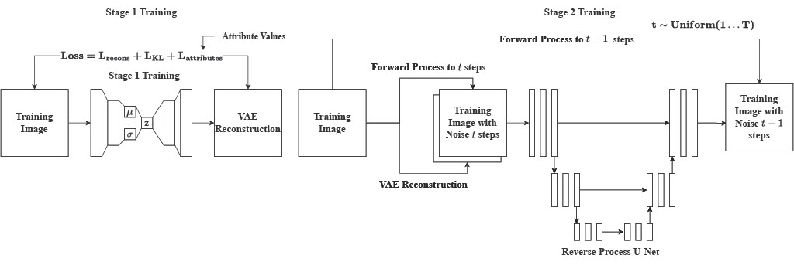

Creative Discovery with AR-VAR-Diffusion
Combining fine-grained generative control (AR-VAE-Diffusion) with diversity-aware exploration (Quality-Diversity Search) for AI-assisted creative discovery.

// 01Overview
This project investigates how AI systems can better support creative exploration by combining fine-grained controllability (Attribute-Regularised VAE-Diffusion) with diversity-aware search (Quality-Diversity Search).
The overarching goal is to move beyond black-box generative systems toward tools that allow artists and designers to explore large creative spaces, control meaningful aesthetic attributes, and discover multiple high-quality alternatives rather than a single optimal output.
// 02Research questions
- How can we introduce meaningful, fine-grained control into deep generative models for complex images?
- How can we explore creative design spaces in a way that preserves both quality and diversity?
- How can AI systems support creative discovery rather than merely optimisation?
// 03Approach
Two complementary systems: AR-VAE-Diffusion for controllable high-fidelity generation, and a Quality-Diversity Search framework for diverse creative exploration of generative design spaces.
AR-VAE-Diffusion Architecture
Combines an Attribute-Regularised VAE (ALSR) that embeds interpretable attributes into specific latent dimensions with a DDPM that enhances generative quality. Training is two-stage: first the AR-VAE, then the diffusion model conditioned on VAE reconstructions.
Datasets & Evaluation
Tested on the Curl Noise Dataset (68k abstract line drawings, attributes: pixel density and generation size) and the Kaggle Abstract Art Dataset (28k abstract paintings, attributes: colour diversity and structural complexity).
Quality-Diversity Search
A four-stage pipeline (Generation, Evaluation, Classification, Breeding) applied to a 14-parameter agent-based line drawing system. Fitness: structural complexity (r = 0.72 with human preference). Diversity: ratio of populated VAE latent clusters.
MAP-Elites Implementation
The design space is partitioned into clusters; each maintains its elite (highest fitness). Mutation-based breeding explores nearby space. QD Search produced significantly more diverse and high-quality outputs than fitness-only genetic search.
// 05Key outcomes
Controllability extends to high-fidelity images
AR-VAE-Diffusion preserves attribute control while dramatically improving image quality over standard VAE, broadening the applicability of attribute-based latent space regularisation to complex artistic datasets.
QD beats fitness-only search
Fitness-only search collapses toward visually similar solutions, while Quality-Diversity Search maintains diverse, high-quality alternatives that better mirror real creative exploration.
Attribute design is crucial
Simpler attributes (e.g., pixel density) produce clearer latent control, while complex attributes reduce disentanglement. Attribute definition shapes emergent generative behaviours.
AI as co-creative partner
The systems preserve some unpredictability, introduce new elements during manipulation, and balance user control with generative agency — supporting discovery rather than optimisation.
Trade-offs & limitations
Diffusion adds computational cost, simple fitness metrics bias results toward measurable aesthetics, and latent reduction techniques (PCA, t-SNE) may distort cluster boundaries.